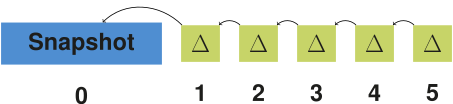
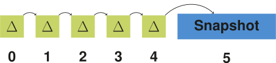
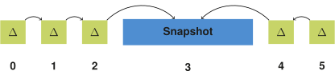

Abstract
Linked Open Datasets on the Web that are published as RDF can evolve over time. There is a need to be able to store such evolving RDF datasets, and query across their versions. Different storage strategies are available for managing such versioned datasets, each being efficient for specific types of versioned queries. In recent work, a hybrid storage strategy has been introduced that combines these different strategies to lead to more efficient query execution for all versioned query types at the cost of increased ingestion time. While this trade-off is beneficial in the context of Web querying, it suffers from exponential ingestion times in terms of the number of versions, which becomes problematic for RDF datasets with many versions. As such, there is a need for an improved storage strategy that scales better in terms of ingestion time for many versions. We have designed, implemented, and evaluated a change to the hybrid storage strategy where we make use of a bidirectional delta chain instead of the default unidirectional delta chain. In this article, we introduce a concrete architecture for this change, together with accompanying ingestion and querying algorithms. Experimental results from our implementation show that the ingestion time is significantly reduced. As an additional benefit, this change also leads to lower total storage size and even improved query execution performance in some cases. This work shows that modifying the structure of delta chains within the hybrid storage strategy can be highly beneficial for RDF archives. In future work, other modifications to this delta chain structure deserve to be investigated, to further improve the scalability of ingestion and querying of datasets with many versions.
Keywords: Linked Data, RDF archiving, Semantic Data Versioning, storage, indexing
Introduction
Even though the RDF [1] data model itself is atemporal, RDF datasets typically change over time [2]. Such changes can include additions, modifications, or deletions of individual facts, ontologies, or even complete datasets. While some evolving datasets such as DBpedia [3] are published as separate dumps per version, more direct and efficient access to prior versions can be desired, so that versioned queries in, between, and across different versions can be done efficiently.
While RDF archiving systems have emerged in the past that can handle such evolving datasets, a survey on archiving Linked Open Data [4] illustrated the need for improved versioning capabilities in order to preserve RDF on the Web and expose queryable access. Concretely, there is a need for systems that can store and query such datasets with low cost and effort on Web servers, so that they can cope with the large scale of RDF datasets on the Web, and their velocity of changes. In previous work, we introduced a new hybrid archiving approach, implemented as a system called OSTRICH [5]. The approach enables efficient triple pattern queries for different versioned query types, while still keeping storage requirements reasonable. OSTRICH was designed to run on average machines, so it can be used as a back-end for low-cost Web query interfaces such as Triple Pattern Fragments [6]. Since it exposes a triple pattern query interface, it can also be used as an index inside SPARQL query engines [7]. As such, this hybrid storage approach is a step towards solving the need for properly preserving RDF on the Web.
A recent survey [8] has shown that existing RDF archiving solutions fail to handle large RDF archives with many versions. It was shown that the hybrid approach employed by OSTRICH is the only one capable of storing large RDF archives, but that it suffers from a scalability issue in terms of ingestion time for many versions. This is an inherent consequence of the storage strategy of OSTRICH, which is employed to achieve performant query execution. Concretely, after ingesting many versions, the ingestion process starts slowing down significantly, which makes OSTRICH unusable for datasets with a large number of versions, which is crucial for preserving RDF datasets on the Web. The reason for this is that the hybrid storage approach from OSTRICH only consists of a single version snapshot at the start, followed by an aggregated delta chain that keeps growing longer for every new version. While this aggregated delta chain is beneficial for faster query execution, it comes at the cost of increased ingestion times. Since additional deltas lead to a cumulative increase in aggregated delta size during ingestion, this process becomes more memory-intensive and slower for every new version. In order to delay this problem, we propose a storage strategy modification, where there still is a single version snapshot, but we place it in the middle of the delta chain, instead of at the beginning, leading to a bidirectional delta chain. This modification is inspired by the concept of bidirectional predicted pictures (B-frames) [9] that are a popular technique within video compression. Typically, such B-frames are used for non-aggregated deltas, but we instead devise a similar technique for aggregated deltas. While bidirectional delta chains complicate ingestion and querying, it leads to two shorter delta chains. This will require less effort than one long delta chain, and may lead to faster ingestion and querying.
In the next section, we discuss the related work, and give more details on OSTRICH. Next, in Section 3, we present our problem statement, followed by our proposed solution in Section 4. After that, we present our experimental setup and results in Section 5, and we conclude in Section 6.
Problem Statement
As mentioned in Section 1, RDF archiving solutions are not sufficiently capable of handing large RDF archives with many versions. While the hybrid storage approach as proposed by OSTRICH can handle the largest archives among all currently existing approaches, it does not scale sufficiently to a large number of versions due to its long delta chains. Our goal in this work is to investigate if we can build on top of this hybrid storage approach and modify its delta chain structure to be able to handle RDF archives with more versions.
We formulate our research question as follows:
How can we improve the storage of RDF archives under the hybrid storage strategy by modification of the delta chain structure?
Concretely, we start from the hybrid storage approach from OSTRICH, and we modify its current (forward) unidirectional delta chain (UDC) into a bidirectional delta chain (BDC). This bidirectional delta chain consists of two smaller delta chains, with respectively reverse and forward deltas, all pointing to one common intermediary snapshot. Since these modifications will reduce the maximum length of a delta chain, without requiring more snapshots, we expect that this will reduce ingestion time, overall storage size, and query execution time for all query atoms. Under the assumption of typical RDF archives provided by standard RDF archiving benchmarks, we define the following hypotheses:
- Storage size is lower for a BDC compared to a UDC.
- In-order ingestion time is lower for a BDC compared to a UDC.
- VM query execution is faster for a BDC compared to a UDC.
- DM query execution is faster for a BDC compared to a UDC.
- VQ query execution is faster for a BDC compared to a UDC.
Bidirectional Delta Chain
In this section, we explain our bidirectional delta chain approach. We start by explaining the general idea behind a bidirectional delta chain. After that, we explain its implication on storage. Finally, we discuss querying algorithms for the foundational query atoms based on this storage approach.
Delta Chain Approaches
In the scope of this work, we distinguish between 6 different delta chain approaches, as can be seen in Table 2. We decompose these approaches into 2 axes: directionality and aggregation.
| Non-aggregated | Aggregated | |
|---|---|---|
| Forward UDC |
 |  |
| Reverse UDC |
 |  |
| BDC |
 |  |
Table 2: Overview of unidirectional forward, unidirectional reverse, and bidirectional delta chain approaches, both with and without aggregated deltas.
Along the directionality axis, we distinguish 3 forms:
- The simplest form is the forward unidirectional delta chain, where the snapshot comes first, and is followed by deltas that are relative to the previous delta.
- The reverse unidirectional delta chain is a variant of this where everything is reversed. Concretely, the snapshot comes last, and is preceded by deltas, where each delta is relative to the next delta.
- These forward and reverse unidirectional approaches can be combined with each other to form a bidirectional delta chain, where a first set of deltas exists before the snapshot, and a second set of deltas exists after the snapshot.
Along the aggregation axis, we consider 2 forms:
- In the non-aggregated form, each delta is relative to the delta immediately before or after it.
- In the aggregated form [26], each delta is relative to the snapshot before or after it, where other deltas may occur in-between.
The aggregated delta approach leads to lower version materialization times,
since each delta can be directly applied to a snapshot,
as opposed to non-aggregated deltas where multiple deltas need to be combined before a version can be materialized.
As such, the version materialization time for aggregated deltas is O(1) with respect to the number of versions,
while it is O(n) for non-aggregated deltas with respect to the number of versions.
This shows how aggregated deltas lead to better query execution times.
The major downside of aggregated deltas is however that storage size increases due to the redundancies between the different deltas.
The longer the delta chain, the larger these redundancies become.
OSTRICH [5] is an example that follows the unidirectional forward aggregated delta chain approach, while RCS [31] (non-RDF-based) follows the unidirectional reverse non-aggregated delta chain approach. In this work, we will investigate the use of the bidirectional aggregated delta chain approach, for reasons explained in the next section.
Motivations for a Bidirectional Delta Chain
Experiments on the unidirectional forward aggregated delta chain approach from OSTRICH [5] have shown that this approach leads to ingestion times that increase linearly with chain length, assuming (non-aggregated) deltas as inputs. This is an expected consequence of the aggregated delta approach, as they grow in size for each new version. The goal of this work is to investigate how these problems can be solved, without losing the advantages of aggregated deltas with respect to query execution times. We would not achieve any lower ingestion times by reversing our delta chain, as the additions and deletions would just be swapped, but would not be smaller. Instead, we aim to reduce ingestion time by lowering storage through the reduction of the number of required snapshots.
One straightforward way of reducing ingestion time would be to create a new snapshot and delta chain once the ingestion time or size has crossed a certain threshold. One example of such a threshold could be that a new snapshot is created once the ingestion time of a delta became larger than the time for ingesting a snapshot. For instance, we can lower the total ingestion time to half the original time by splitting one delta chain into two delta chains, or even to one third by splitting it up into three delta chains. In the extreme, each version would form its own snapshot, which would lead to the independent copies storage strategy, at the cost of increased storage size. As such, there is a trade-off between ingestion time and storage size, and new delta chains should only be started once ingestion times become higher than desired.
Since the creation of a snapshot can be costly in terms of storage size, it should be avoided until absolutely necessary. As explained in the previous paragraph, splitting up a delta chain into two separate delta chains would lead to two snapshots, each followed by a chain of deltas. We can however reduce the number of required snapshots by combining the forward and reverse approaches into a bidirectional approach, by allowing two sets of deltas to make use of the same snapshot. Intuitively, one bidirectional delta chain is equivalent to two forward delta chains, where the second delta chain is reversed. The snapshots of these two chains are therefore shared, so that it only has to be created and stored once.
As such, the main advantage of a bidirectional delta chain is that it can more efficiently make use of snapshots. Instead of only allowing deltas in one direction to make use of it, also deltas in the opposite direction can make use of it. This is especially advantageous for aggregated deltas, as these grow in size for longer chains. In the scope of this research, we continue working with a bidirectional aggregated delta chain due to the non-increasing query execution times for increasing numbers of versions.
One disadvantage of the bidirectional approach is that it complicates ingestion, since we can not build a reverse delta chain directly, as we can not always know beforehand what a future version will look like. We tackle this problem in Subsection 4.4.
Storage Approach
As mentioned before, our goal is to improve storage efficiency of RDF archives. For this, we build on top of the hybrid storage approach from OSTRICH, and we fundamentally modify this storage approach to use a bidirectional aggregated delta chain instead of a unidirectional aggregated delta chain. Concretely, this means that not only deltas exist after the snapshot, but also before the snapshot.

Fig. 1: Overview of the main components of our storage approach consisting of a bidirectional aggregated delta chain.
Fig. 1 shows an overview of the main components of our storage approach. Note in particular the delta chain on the left side of the snapshot, while OSTRICH only has a single delta chain on the right side of the snapshot. All other components are inherited from OSTRICH, which we briefly summarize in the next paragraph.
We store the snapshot using HDT [10], due to its highly performant triple pattern queries, cardinality estimates, and high compression rate. Furthermore, metadata about the archive is stored, containing details such as the total number of versions. To avoid storage overhead due to redundancies between different aggregated deltas, each delta chain is compressed into timestamp-based B+tree indexes where additions and deletions are stored separately. This separation is done to speed up query evaluation since additions and deletions are not always needed at the same time. To enable efficient triple pattern queries for all possible combinations, each addition and deletion index is stored three times for different triple components orders (SPO, POS, OSP). To compress each triple component further, a shared dictionary is used. In order to allow efficient cardinality estimate retrieval for deletions, the SPO deletion index contains additional metadata about the relative position of each triple inside the snapshot. To enable cardinality estimates for additions, we make use of a dedicated addition count index. For the sake of brevity, we omit further details about the components that can be found in the OSTRICH article (section 5) [5].
Ingestion Approach
In this section, we introduce an approach to enable ingestion of new versions within our bidirectional aggregated storage approach. For this, we build upon the streaming ingestion algorithm and DM query algorithm for unidirectional forward aggregated delta chains [5], which allows us to insert deltas after the snapshot.
In order to insert deltas before the snapshot, our approach for constructing the reverse delta chain involves a temporary forward delta chain. This is because we can not start building our reverse delta chain directly, as we can not predict what triples will be in the snapshot later down the line. For each new version, our temporary forward delta chain will be built up, and can be queried in the meantime. From the moment that this delta chain becomes too long, or some other threshold has been exceeded, then an offline fix-up algorithm is triggered that will effectively reverse this delta chain, and place a snapshot at the end, where a new forward delta chain can be built upon when new versions arrive.
FUNCTION fixUp(store)# Recreate deltas, but in reverseadditions = []deletions = []FOR v IN store.getVersions()deletions.push(store.getAdditions(v, v + 1))additions.push(store.getDeletions(v, v + 1))# Ingest reversed deltas into a new delta chainnewChain = store.newDeltaChain({ reversed: true })FOR v IN store.getVersions()newChain.ingest(v, additions[v], deletions[v])# Replace delta chainexistingChain = store.getDeltaChain(store.getVersions())store.replaceChain(existingChain, newChain)
Algorithm 1: Fix-up algorithm for reversing an existing bidirectional aggregated delta chain.
Algorithm 1 shows a sketch of our fix-up algorithm in pseudo-code. First, the aggregated deltas in the chain will be extracted as non-aggregated deltas by invoking a DM query over the current unidirectional aggregated delta chain. We store the deletions as additions, and the additions as deletions. Next, we create a new delta chain, and insert these reversed non-aggregated deltas by invoking the streaming ingestion algorithm to create unidirectional aggregated delta chains. Once ingestion is done, the existing delta chain is replaced by our new delta chain.
The main advantage of this fix-up approach is that it avoids query unavailability of the archive. The fix-up algorithm can run at any time, preferably when the server is experiencing a lower query load. During the execution of this process, the temporary forward delta chain is still available, so queries are still possible during this time. Only after the fix-up process is done, query executions will be delegated to this new reverse delta chain, and the temporary forward delta chain can be deleted. Since this fix-up process only applies to the first (temporary) delta chain, and does not touch the second delta chain, it may even run in parallel to other ingestion processes for new versions.
Out-of-order Ingestion Approach
The previously discussed ingestion approach assumes in-order ingestion of versions, where versions are ingested as soon as they become available. In some cases, it may occur that all versions are present beforehand, and can be ingested at the same time. If this occurs, we can simplify ingestion and avoid the fix-up algorithm, by not inserting versions in their logical order.
FUNCTION ingestOutOfOrder(store, versions)# Create snapshot for middle versionvMiddle = Math.floor(versions.length / 2)store.createSnaphot(middleVersion, versions[vMiddle])# Create reverse delta chainreverseChain = store.newDeltaChain({ reversed: true, snapshot: vMiddle })FOR v = 0; v < vMiddle; v++reverseChain.ingest(v, versions.deletions[v], versions.additions[v])# Create forward delta chainforwardChain = store.newDeltaChain({ reversed: false, snapshot: vMiddle })FOR v = vMiddle + 1; v < versions.length; v++forwardChain.ingest(v, versions.additions[v], versions.deletions[v])
Algorithm 2: Out-of-order ingestion algorithm for creating a bidirectional aggregated delta chain for a predetermined set of versions.
Algorithm 2 shows a sketch of our out-of-order algorithm in pseudo-code.
Concretely, if we have a set of n versions
then we first determine the middle version ⌊n/2⌋.
For this middle version, we create a fully materialized snapshot, and assign its proper version label ⌊n/2⌋.
Next, we create our reverse delta chain for all versions < ⌊n/2⌋,
by invoking the streaming ingestion algorithm to create unidirectional aggregated delta chains targeted at snapshot ⌊n/2⌋, and by swapping the addition and deletion labels.
Finally, we create our forward delta chain for all versions > ⌊n/2⌋,
by again invoking the streaming ingestion algorithm to create unidirectional aggregated delta chains
targeted at snapshot ⌊n/2⌋.
This out-of-order ingestion will typically not be used in a live setting. Instead, it can be used when initializing an archive when all versions are known beforehand.
Query Algorithms
In this section, we discuss triple pattern query algorithms for the three query atoms discussed in Section 2 (VM, DM, VQ). For simplicity, we assume the existence of a (bidirectional) delta chain with one snapshot. We consider multiple snapshots and delta chains future work. We build upon the existing algorithms for unidirectional (aggregated) delta chains [5], and thereby inherit their properties of streaming, offset support, and cardinality estimators. Below, we briefly discuss the relevant parts of these existing algorithms. For more details, we refer to the OSTRICH article (section 7) [5].
Version Materialization
Version Materialization (VM) allows retrieval of triples in a given version. In summary, VM over a unidirectional delta chain works by either querying a snapshot directly, if the requested version is a snapshot, or applying a given delta on the closest preceding snapshot otherwise. In our bidirectional delta chain, a snapshot can not only exist before a delta, but also after a delta. Nevertheless, the algorithm itself remains the same as for a unidirectional delta chain, as the delta will have to be applied onto the snapshot in both cases. As such, we do not discuss this VM case any further.
Delta Materialization
Delta Materialization (DM) allows differences between two given versions to be retrieved. The DM algorithm over a unidirectional delta chain distinguishes two cases for this; either the start version is a snapshot or a delta, where the end version will always be a delta. If the start (or end) version is a snapshot, then the result is simply a query within the aggregated delta of the end version. Otherwise, the addition and deletion indexes for the two delta versions are iterated in a sort-merge join-like operation, and only emit the triples that have a different addition/deletion flag for the two versions.
In our bidirectional storage approach, one additional case can occur:
when the start and end version correspond to deltas in the bidirectional delta chain before and after the snapshot,
i.e., the DM query crosses the snapshot boundary.
For this, we split up our query into two queries:
a DM query from the start version until the snapshot,
and a DM query from the snapshot until the end version.
These two queries can be resolved over the two respective delta chains using the DM algorithm over a unidirectional delta chain.
As the OSTRICH DM algorithm guarantees that the triples from these two queries are sorted (because the are stored in order),
we can merge them in a sort-merge join way (which preserves the order),
where triples are only emitted if they don’t exist in both streams (ignoring the addition/deletion flag).
Algorithm 3 illustrates this algorithm in pseudocode.
Following the patch notation for DARCS [32],
with o being the start version, e being the end version and s being the snapshot,
our delta split corresponds to oDe = oD1sD2e.
FUNCTION queryDmCase3(store, start, end)snapshotVersion = store.getSnapshotBetween(start, end)reverseStream = store.getDeltaStream(start, snapshotVersion)forwardStream = store.getDeltaStream(snapshotVersion, end)return sortMerge(reverseStream, forwardStream)
Algorithm 3: Delta Materialization algorithm for triple patterns that produces a triple stream when the version range crosses the snapshot boundary.
In order to estimate the cardinality of this third case, the same idea is followed where the counts of the part of the delta chain before and after the snapshot are added. Just like the existing DM cardinality estimator over a unidirectional delta chain, this can be an overestimation, since certain triples may occur in both delta chains that would be omitted from the final result stream.
Version Query
A Version Query (VQ) enables querying across all versions, with results being annotated with the versions in which they occur. VQ over a unidirectional delta chain is done by iterating over the snapshot for a given triple pattern in a streaming manner. Every snapshot triple is queried within the deletion index. For every discovered deletion, their respective version annotations are removed from the result. If no such deletion value was found, the triple was never deleted, so the versions annotation will contain all versions of the store. Once the snapshot stream has finished, the addition index are iterated in a similar way, where the version annotation of every addition triple is again updated based on its presence in the deletion index.
Our case is a trivial extension of this algorithm. Instead of checking single addition and deletion streams, two addition and deletion streams have to be checked. This will produce distinct version annotations, for which we apply the union.
To estimate the cardinality of the VQ results, the unidirectional delta chain approach can again be extended by adding the snapshot cardinality with the addition cardinality for both delta chains for the given triple pattern. As some triples could occur in both delta chains, this can lead to an overestimation.
Evaluation
In this section, we evaluate our bidirectional archiving approach by comparing our implementation to native OSTRICH and other systems.
Implementation
We have implemented our storage approach and query algorithms as a tool called COBRA (Change-Based Offset-Enabled Bidirectional RDF Archive). COBRA is an extension of OSTRICH, has been implemented in C/C++, and is available under the MIT license on GitHub. Our implementation uses HDT [10] as snapshot technology, and makes use of the highly efficient memory-mapped B+Tree implementation Kyoto Cabinet for storing our indexes. The delta dictionary is encoded with gzip, which requires decompression during querying and ingestion.
Experimental Setup
In order to evaluate the ingestion and triple pattern query execution of COBRA, we make use of the BEAR benchmark. To test the scalability of our approach for datasets with few and large versions, we use the BEAR-A benchmark. We use the first ten versions of the BEAR-A dataset (more versions cause memory issues with OSTRICH), which contains 30M to 66M triples per version. This dataset was compiled from the Dynamic Linked Data Observatory. To test for datasets with many smaller versions, we use BEAR-B with the daily and hourly granularities. For the daily dataset we use 89 versions and for hourly dataset 1,299 versions, both of them have around 48K triples per version. All experiments were performed on a 64-bit Ubuntu 14.04 machine with a 24-core 2.40 GHz CPU and 128 GB of RAM. Our experimental setup and its raw results are available on GitHub, as well as the scripts that were used to process them.
Considering we aim to measure the benefits of the bidirectional aggregated delta chain compared to the unidirectional aggregated delta chain under the hybrid storage strategy, we primarily distinguish between the following storage approaches:
- OSTRICH: Forward unidirectional aggregated delta chain (Subfig. 2.1)
- COBRA*: Bidirectional aggregated delta chain before fix-up (Subfig. 2.2)
- COBRA: Bidirectional aggregated delta chain after fix-up (Subfig. 2.3)
Subfig. 2.1: OSTRICH with a forward unidirectional aggregated delta chain
Subfig. 2.2: COBRA* with two unidirectional aggregated delta chains before fix-up
Subfig. 2.3: COBRA with a bidirectional aggregated delta chain after fix-up (ingested out-of-order starting with snapshot)
Fig. 2: The different storage approaches used in our experiments for an arbitrary dataset with six versions.
In order to achieve a more complete comparison with other approaches, we also evaluate BEAR’s Jena (IC, CB, TB and hybrid CB/TB) and HDT-based (IC and CB) RDF archive baseline implementations. We consider a comparison with other systems such as X-RDF-3X, RDF-TX and Dydra out of scope for this work due to the major difficulties we experienced with these systems caused by missing implementations or the additional required implementation effort to support the required query interfaces.
In the scope of this work, we work with at most two delta chains. For simplicity of these experiments, we always start a new delta chain in the middle version of the dataset (5 for BEAR-A, 45 for BEAR-B Daily, 650 for BEAR-B Hourly). Note that for the COBRA storage approach, we assume that all versions are available beforehand, so they can be stored out of order, starting with the middle snapshot. For example, following the out-of-order ingestion algorithm from Subsection 4.5, for BEAR-A, this will first lead to the creation of a snapshot for version 5, the creation of a reverse delta chain for versions 0-4, and finally the creation of a forward delta chain for versions 6-9. In practice, this may not always be possible, which is why we report on the additional fix-up time during ingestion separately that would be required when ingesting in order (COBRA*).
To evaluate triple pattern query performance,
we make use of the query sets provided by BEAR.
BEAR-A provides 7 query sets containing around 100 triple patterns that are further divided into high result cardinality and low result cardinality by the benchmark creators.
BEAR-B provides two query sets that contain ?P? and ?PO queries.
We evaluate these queries as VM queries for all version, DM queries between the first and all other versions and a VQ query.
In order to minimize outliers, we replicate the queries five times and take the mean results.
Furthermore, we perform a warm-up period before the first query of each triple pattern.
Since neither OSTRICH nor COBRA support arbitrary numbers of snapshots,
we limit our experiments to OSTRICH’s unidirectional storage layout and COBRA’s bidirectional storage layout with a single snapshot.
Measurements
In this section, we discuss the results of our experiments on ingestion and query evaluation, which we then analyze in the next section.
Ingestion
Table 3 and Table 4 respectively show the total storage sizes and ingestion times for BEAR-A, BEAR-B Daily, and BEAR-B Hourly under the different storage approaches.
When purely comparing the COBRA approaches and OSTRICH, it can be observed that COBRA requires less storage space than OSTRICH for BEAR-A and BEAR-B Hourly, but not for BEAR-B Daily. COBRA* requires more storage space than both COBRA and OSTRICH with BEAR-A, but it requires less ingestion time. For BEAR-B Daily, OSTRICH requires less storage, but COBRA* has the lowest ingestion time. For BEAR-B Hourly, COBRA* is lower in terms of storage size and ingestion time than both COBRA and OSTRICH. The outliers that are apparent for BEAR-B Hourly are compression artefacts for the storage of dictionaries and delta chains using Kyoto Cabinet, as storage size may fluctuate slightly based on the available data. In summary, COBRA requires less ingestion time than OSTRICH in all cases (59% less on average), and it reduces storage size for two out of the three cases (19% lower on average).
Compared to the HDT and Jena-based approaches, and the original raw representation of BEAR’s delta files in N-Triples and gzip, we see similar results as shown before in the OSTRICH article (section 8.3.1) [5]. COBRA, COBRA*, and OSTRICH reduce storage size compared to the raw gzip representation, expect for BEAR-A. HDT-CB is consistently smaller, and Jena-CB/TB is also smaller for the BEAR-B datasets. Regarding ingestion time, OSTRICH and COBRA are overall significantly slower than the alternatives. However, COBRA speeds up ingestion enough so that it comes close to some of the Jena-based approaches, and sometimes even becomes faster than them.
| Approach | BEAR-A | BEAR-B Daily. | BEAR-B Hourly |
|---|---|---|---|
| Raw (N-Triples) | 46,069.76 | 556.44 | 8,314.86 |
| Raw (gzip) | 3,194.88 | 30.98 | 466.35 |
| OSTRICH | 4,587.52 | 16.87 | 450.59 |
| COBRA | 4,066.74 | 25.69 | 331.20 |
| COBRA* | 5,052.67 | 21.58 | 216.95 |
| Jena-IC | 32,808.96 | 415.32 | 6,233.92 |
| Jena-CB | 18,216.96 | 42.82 | 473.41 |
| Jena-TB | 82,278.4 | 23.61 | 3,678.89 |
| Jena-CB/TB | 31,160.32 | 22.83 | 53.84 |
| HDT-IC | 6,829.73 | 148.61 | 2,226.45 |
| HDT-CB | 3,485.43 | 6.21 | 25.14 |
Table 3: Total storage size in MB for the different datasets. The lowest sizes per dataset are indicated in bold. There is no consistent overall winner.
| Approach | BEAR-A. | BEAR-B Daily | BEAR-B Hourly |
|---|---|---|---|
| OSTRICH | 2,256 | 12.36 | 4,497.32 |
| COBRA | 1,300 | 6.54 | 529.99 |
| COBRA* | 1,019 | 4.91 | 337.52 |
| Jena-IC | 443 | 8.91 | 142.26 |
| Jena-CB | 226 | 9.53 | 173.48 |
| Jena-TB | 1,746 | 0.35 | 70.56 |
| Jena-CB/TB | 679 | 0.35 | 0.65 |
| HDT-IC | 34 | 0.39 | 5.89 |
| HDT-CB | 18 | 0.02 | 0.07 |
Table 4: Total ingestion time in minutes for the different datasets. The lowest times per dataset are indicated in bold.
![[bear-a ingestion sizes]](img/results-ingestion-size-beara.svg)
Subfig. 3.1: BEAR-A
Subfig. 3.2: BEAR-B Daily
![[bear-b-hourly ingestion sizes]](img/results-ingestion-size-bearb-hourly.svg)
Subfig. 3.3: BEAR-B Hourly
Fig. 3: Cumulative storage sizes for BEAR-A, BEAR-B Daily, and BEAR-B Hourly under the different storage approaches. COBRA requires less storage space than OSTRICH for BEAR-A and BEAR-B Hourly. The middle snapshot always leads to a significant increase in storage size. The ingestion of COBRA happens out of order, which means that the middle version is ingested first, up until version 0, after which all versions after the middle version are ingested in normal order.
Subfig. 4.1: BEAR-A
Subfig. 4.2: BEAR-B Daily
Subfig. 4.3: BEAR-B Hourly
![[bear-b-hourly ingestion rate with logarithmic axis]](img/results-ingestion-rate-bearb-hourly-log.svg)
Subfig. 4.4: BEAR-B Hourly (Logarithmic Y axis)
Fig. 4: Ingestion times per version for BEAR-A, BEAR-B Daily, and BEAR-B Hourly under the different storage approaches. COBRA resets ingestion time from the snapshot version, while ingestion time for OSTRICH keeps increasing. The ingestion of COBRA happens out of order, which means that the middle version is ingested first, up until version 0, after which all versions after the middle version are ingested in normal order.
In order to provide more details on the evolution of storage size and ingestion time of COBRA(*) compared to OSTRICH, Fig. 3 shows the cumulative storage size for the different datasets, and Fig. 4 shows the ingestion time for these datasets. Note that COBRA is ingested out of order, which means that the first half of the delta chain is ingested first in reverse order, and the second half of the delta chain is ingested after that in normal order. These figures show the impact of the middle snapshots within the bidirectional chain. For BEAR-A, storage size for COBRA lowers in the second half of the delta chain, which shows that a snapshot with reversed deltas pointing to it (COBRA) requires less storage space compared to continued use of aggregated deltas (OSTRICH). For BEAR-B Daily, the storage size significantly increases for the second half of the delta chain, but for BEAR-B hourly it decreases. For all datasets, COBRA ingestion times reset to low values from the middle version. Especially for BEAR-B Hourly we see a significant decrease in ingestion time for COBRA compared to OSTRICH. While OSTRICH experiences major performance issues from around version 1100, the ingestion times of COBRA are much lower, which clearly shows the benefit of the bidirectional delta chain.
Finally, Table 5 shows the fix-up times, which are measured as a separate offline process, together with their additional cost relative to out of order ingestion. The fix-up time is the time it would take to transition from the COBRA* to COBRA storage approach, when the versions cannot be inserted out of order. While this fix-up requires only 2.39 times more time relative to the overhead of COBRA compared to COBRA* for BEAR-B Daily, it requires more than 200 times more time for BEAR-A and BEAR-B Hourly, which shows that out-of-order ingestion is still preferred when possible.
| Dataset | Time | Overhead cost |
|---|---|---|
| BEAR-A | 9.52 hours | 203.27x |
| BEAR-B Daily | 3.91 minutes | 2.39x |
| BEAR-B Hourly | 7.82 hours | 243.78x |
Table 5: Fix-up duration for the different datasets, together with its cost relative to the overhead of COBRA compared to COBRA*.
Query Evaluation
Fig. 5, Fig. 6, and Fig. 7 show the query results on BEAR-A for all approaches for respectively VM, DM and VQ. Fig. 8, Fig. 9, and Fig. 10 show the same for BEAR-B Daily, and Fig. 11, Fig. 12, and Fig. 13 for BEAR-B Hourly. These query evaluation times are averaged across all query sets for their respective dataset. For completeness, we included more detailed plots for each query set separately in the appendix.
When purely comparing COBRA and OSTRICH, the summarizing figures show that for VM queries, COBRA is faster than OSTRICH in BEAR-A, but for the BEAR-B datasets, COBRA is slightly faster than OSTRICH for the first half of the delta chain, and becomes slower in the second half. For DM, COBRA is always equal or faster than OSTRICH when querying within the first half of its delta chain, but slower for the second half. For VQ, COBRA is faster than OSTRICH for BEAR-B Hourly, slightly faster for BEAR-B Daily, and slower for BEAR-A.
When also including the HDT and Jena approaches, we see that for VM queries, HDT-IC is overall faster than all other approaches, and Jena-based approaches are mostly the slowest. HDT-CB also starts of about as fast as HDT-IC, but becomes slower for later versions, and even becomes significantly slower than COBRA and OSTRICH for BEAR-B Hourly that has many versions. For DM queries, HDT-IC is slightly faster than COBRA and OSTRICH. Again, Jena-based approaches are significantly slower, and HDT-CB again starts off fast, but becomes slower for later versions. For VQ queries, COBRA and OSTRICH are faster than all other approaches, except for BEAR-A where the HDT-based approaches achieve similar performance.
![[bear-a vm]](img/query/results_beara-vm-summary.svg)
Fig. 5: Median BEAR-A VM query results for all triple patterns for all versions.
Fig. 6: Median BEAR-A DM query results for all triple patterns from version 0 to all other versions.
![[bear-a vq]](img/query/results_beara-vq-summary.svg)
Fig. 7: Median BEAR-A VQ query results for all triple patterns.
![[bear-b-daily vm]](img/query/results_bearb-daily-vm-summary.svg)
Fig. 8: Median BEAR-B-daily VM query results for all triple patterns for all versions.
Fig. 9: Median BEAR-B-daily DM query results for all triple patterns from version 0 to all other versions.
Fig. 10: Median BEAR-B-daily VQ query results for all triple patterns.
Fig. 11: Median BEAR-B-hourly VM query results for all triple patterns for all versions.
![[bear-b-hourly dm]](img/query/results_bearb-hourly-dm-summary.svg)
Fig. 12: Median BEAR-B-hourly DM query results for all triple patterns from version 0 to all other versions.
Fig. 13: Median BEAR-B-hourly VQ query results for all triple patterns.
Result analysis
In this section, we discuss the findings of our results regarding ingestion and query evaluation when comparing the bidirectional delta chain with a unidirectional delta chain, we test our hypotheses, and we discuss the overall comparison of different archiving approaches.
Ingestion
While the unidirectional delta chain leads to increasing ingestion times for every new version, initiating a new snapshot (COBRA*) can effectively reset these ingestion times, and lead to overall lower ingestion times. The downside is that there can be an increase in storage size due to this, for datasets that have few small or large versions (BEAR-B Daily and BEAR-A). Otherwise for many small versions (BEAR-B Hourly) there is a decrease in storage size, because the creation of a new snapshot and delta chain outweighs continuing with the aggregated deltas in terms of storage size. As such, for datasets that have few small or large versions (BEAR-B Daily and BEAR-A), it is recommended to wait longer before initiating a new snapshot in the delta chain. On the other hand, the decrease in storage size for BEAR-B Hourly hints that we could have reduced total storage size even more by creating the snapshot slightly earlier. Given the capabilities and query load of the server and affordable storage overhead, a certain ingestion size and time threshold could be defined, which would initiate a new snapshot when this threshold is exceeded.
Once there are two unidirectional delta chains, the first one could optionally be reversed so that both can share one snapshot through a fix-up process (COBRA). Our results show that this can further reduce storage size for datasets with few large versions (BEAR-A and BEAR-B Hourly), and even lead to less storage space compared to the continued use of aggregated deltas (OSTRICH). However, even though there is a reduction of storage size for many small versions (BEAR-B Daily), this leads to overhead in terms of storage size compared to the unidirectional delta chain (OSTRICH). This shows that a bidirectional delta chain is more effective for BEAR-A and BEAR-B Hourly compared to the BEAR-B Daily dataset in terms of storage size, while it is always effective in terms of ingestion time. The fix-up process for enabling this reversal does however require a significant execution time. Since this could easily run in a separate offline process in parallel to query execution and the ingestion of next versions, this additional time is typically not a problem. As such, when the server encounters a dataset with large versions (millions of triples per version), then the fix-up approach should be followed.
The results also show that if all versions are known beforehand, they should be ingested out-of-order into a bidirectional delta chain. Because this leads to a significantly lower total ingestion time compared to in-order ingestion followed by the fix-up process.
Query Evaluation
Regarding query performance, our results show that the bidirectional delta chain also has a large impact here compared to the unidirectional delta chain. Since two shorter delta chains lead to two smaller addition and deletion indexes compared to one longer delta chain, VM and DM times become lower for the dataset with few large versions (BEAR-A), since less data needs to be iterated. However, for datasets with many small versions (BEAR-B), we see that VM times become lower or equal for the first half of the bidirectional delta chain, but become slower for the second half. We see this behaviour also recurring across all datasets for DM queries. This is because in these cases we need to query within the two parts of the delta chain, i.e., we need to search through two addition and deletion indexes instead of just one. For datasets with many small versions (BEAR-B), VQ also becomes faster with a bidirectional delta chain, but this does not apply when the dataset has few large versions (BEAR-A). This is again caused by the fact that we now have two delta chains, and two addition and deletion indexes to query in. When we have many small versions, these two delta chains are worth it, as the benefit of the shared snapshot outweighs the overhead of the delta chains. However, for few large versions, the overhead of two delta chains is too large for VQ, and one delta chain performs better. In summary, a bidirectional delta chain is effective for optimizing VM (assuming few large versions), it can make DM faster for the first half of all versions, but it slows DM down for the second half, and it is beneficial for VQ (assuming many small versions).
Hypotheses
In Section 3, we defined research hypotheses, which we will now answer based on our experimental results. In our first hypothesis, we expected storage size to become lower with a bidirectional delta chain compared to a unidirectional delta chain. While this is true for BEAR-A and BEAR-B Hourly, this is not true for BEAR-B Daily. As such, we reject this hypothesis. In our second hypothesis, we expected ingestion time to be lower with a bidirectional delta chain, which was the primary goal of this work. Our results show that this is true. As such, we accept this hypothesis. Our other hypotheses expect that evaluation times for VM, DM and VQ with a bidirectional delta chain would be lower. Our results show that each one of them is true in many cases, but they are not valid across the board, so we reject each of them.
Comparison of Archiving Approaches
In previous work, it was shown that OSTRICH can speed up VM, DM, and VQ queries on average compared to other RDF archiving approaches, at the cost of higher ingestion times. Our experimental results for the new bidirectional delta chain approach from COBRA show that it can significantly reduce ingestion time, and sometimes also ingestion size. Even though there are these reductions, there are still approaches for which ingestion is significantly faster (Jena-TB, Jena-CB/TB, HDT-IC, HDT-CB) and storage size is slightly lower (Jena-TB, Jena-CB/TB, HDT-CB).
The results show that HDT-based approaches can perform exceptionally well in certain cases, but they then perform relatively much worse in other cases. For instance, HDT-IC performs best in all cases for VM queries, but this comes at the cost of very high storage requirements. Furthermore, HDT-CB performs really well for all queries, but becomes continuously slower for more versions in the dataset. Overall, Jena-based approaches are the slowest. In general, both OSTRICH and COBRA offer a valuable trade-off between these extremes, with COBRA focusing on reducing the problematically high ingestion times of OSTRICH. OSTRICH and COBRA are thereby never the optimal solution for all specific cases, but they perform –on average– sufficiently well for all different cases, which is not the case for the other approaches.
Conclusions
In this work, we improved the storage of RDF archives under the hybrid storage strategy (OSTRICH) by making use of a bidirectional delta chain. Based on our implementation of this new approach (COBRA), our experimental results show that this modification leads to more efficient ingestion (59% faster) compared to a unidirectional delta chain (OSTRICH). This change also reduces total storage size (19% lower) for two out of three datasets. Furthermore, all versioned query types achieve a performance boost (21% faster), except for VQ under the BEAR-A dataset. COBRA offers a more balanced performance trade-off between the different versioned query types and ingestion compared to other RDF archiving approaches that may perform better in specific cases, but worse in other cases. This trade-off, combined with query execution times in the order of 1 millisecond or less, shows that the bidirectional delta chain strategy from COBRA is an ideal back-end for RDF archives in the context of Web querying, as network latency is typically slower than that.
As such, the bidirectional delta chain (COBRA) is a viable alternative to the unidirectional delta chain (OSTRICH), as it reduces its scalability problems during ingestion while still achieving sufficiently fast querying. We recommend bidirectional delta chains when any of the following is needed (in order of importance):
- Lower ingestion times
- Lower storage sizes
On the other hand, we do not recommend bidirectional delta chains in the following cases:
- Fast VQ is needed over datasets with very large versions: Bidirectional chains slow down VQ when versions are large.
- Fast VM/DM is needed over datasets with many small versions: Bidirectional chains slow down VM and DM in the second half for many smaller versions.
- Dataset has only a few small versions: Unidirectional chain should be used until the ingestion of a new version exceeds the ingestion time of a new snapshot.
These limitations of a bidirectional delta chain may be resolvable in future work through more intelligent strategies on when to convert a unidirectional delta chain into a bidirectional delta chain. Next to this, the beneficial impact of the bidirectional delta chain opens up questions as to what respect other transformations of the delta chain in terms of delta directionality and snapshot placement may be beneficial to ingestion time, storage size, and query performance. First, deltas may inherit from two or more surrounding versions, instead of just one. Second, aggregated and non-aggregated deltas are just two extremes of delta organization. A range of valuable possibilities in between may exist, such as inheriting from the nth largest preceding version. Third, the impact of multiple snapshots and strategies to decide when to create them still remain as open questions, which we suspect will be crucial for RDF archiving for indefinitely increasing numbers of versions. Fourth, the creation of multiple snapshots will also lead to the need for querying across multiple snapshots and delta chains. While the existing VM querying algorithm can be reused for this, new efficient algorithms for DM and VQ with offset support will be required, as well as algorithms for providing cardinality estimates.
While these findings show that a bidirectional delta chain can be more beneficial than a unidirectional delta chain for the same version range, neither approach will scale to an infinite number of versions. Therefore, investigating creation of multiple snapshots in future work to create new delta chains will be crucial for solving scalability issues when ingesting (theoretically) infinite numbers of version. While we expect that the creation and querying of multiple delta chains will be significantly more expensive than a single delta chain, the use of bidirectional chains can delay their need by a factor of 2 compared to unidirectional delta chains.
We have shown that modifying the structure of the delta chain can be highly beneficial for RDF archiving. This brings us closer to an efficient queryable Semantic Web that can evolve and maintain its history.
Appendix
BEAR-A Query Evaluation results
In this appendix section, we list all measured BEAR-A query evaluation durations. Each figure contains the durations for each storage approach, being OSTRICH, COBRA, HDT-IC, HDT-CB, Jena-IC, Jena-CB, Jena-TB and Jena-CB/TB.
Fig. 14: Average VM query results for S?? triple patterns with a low cardinality for all versions.
Fig. 15: Average VM query results for S?? triple patterns with a high cardinality for all versions.
Fig. 16: Average VM query results for ?P? triple patterns with a low cardinality for all versions.
Fig. 17: Average VM query results for ?P? triple patterns with a high cardinality for all versions.
Fig. 18: Average VM query results for ??O triple patterns with a low cardinality for all versions.
Fig. 19: Average VM query results for ??O triple patterns with a high cardinality for all versions.
Fig. 20: Average VM query results for SP? triple patterns with a low cardinality for all versions.
![[bear-a SP? high vm]](img/query/result_beara-vm-sp-high.svg)
Fig. 21: Average VM query results for SP? triple patterns with a high cardinality for all versions.
Fig. 22: Average VM query results for S?O triple patterns with a low cardinality for all versions.
Fig. 23: Average VM query results for ?PO triple patterns with a low cardinality for all versions.
Fig. 24: Average VM query results for ?PO triple patterns with a high cardinality for all versions.
Fig. 25: Average VM query results for SPO triple patterns for all versions.
![[bear-a S?? low dm]](img/query/result_beara-dm-s-low.svg)
Fig. 26: Average DM query results for S?? triple patterns with a low cardinality from version 0 to all other versions.
![[bear-a S?? high dm]](img/query/result_beara-dm-s-high.svg)
Fig. 27: Average DM query results for S?? triple patterns with a high cardinality from version 0 to all other versions.
Fig. 28: Average DM query results for ?P? triple patterns with a low cardinality from version 0 to all other versions.
Fig. 29: Average DM query results for ?P? triple patterns with a high cardinality from version 0 to all other versions.
![[bear-a ??O low dm]](img/query/result_beara-dm-o-low.svg)
Fig. 30: Average DM query results for ??O triple patterns with a low cardinality from version 0 to all other versions.
Fig. 31: Average DM query results for ??O triple patterns with a high cardinality from version 0 to all other versions.
![[bear-a SP? low dm]](img/query/result_beara-dm-sp-low.svg)
Fig. 32: Average DM query results for SP? triple patterns with a low cardinality from version 0 to all other versions.
Fig. 33: Average DM query results for SP? triple patterns with a high cardinality from version 0 to all other versions.
![[bear-a S?O low dm]](img/query/result_beara-dm-so-low.svg)
Fig. 34: Average DM query results for S?O triple patterns with a low cardinality from version 0 to all other versions.
Fig. 35: Average DM query results for ?PO triple patterns with a low cardinality from version 0 to all other versions.
Fig. 36: Average DM query results for ?PO triple patterns with a high cardinality from version 0 to all other versions.
Fig. 37: Average DM query results for SPO triple patterns from version 0 to all other versions.
Fig. 38: Average VQ query results for S?? triple patterns with a low cardinality.
Fig. 39: Average VQ query results for S?? triple patterns with a high cardinality.
![[bear-a ?P? low vq]](img/query/result_beara-vq-p-low.svg)
Fig. 40: Average VQ query results for ?P? triple patterns with a low cardinality.
![[bear-a ?P? high vq]](img/query/result_beara-vq-p-high.svg)
Fig. 41: Average VQ query results for ?P? triple patterns with a high cardinality.
Fig. 42: Average VQ query results for ??O triple patterns with a low cardinality.
Fig. 43: Average VQ query results for ??O triple patterns with a high cardinality.
Fig. 44: Average VQ query results for SP? triple patterns with a low cardinality.
![[bear-a SP? high vq]](img/query/result_beara-vq-sp-high.svg)
Fig. 45: Average VQ query results for SP? triple patterns with a high cardinality.
![[bear-a S?O low vq]](img/query/result_beara-vq-so-low.svg)
Fig. 46: Average VQ query results for S?O triple patterns with a low cardinality.
![[bear-a ?PO low vq]](img/query/result_beara-vq-po-low.svg)
Fig. 47: Average VQ query results for ?PO triple patterns with a low cardinality.
Fig. 48: Average VQ query results for ?PO triple patterns with a high cardinality.
Fig. 49: Average VQ query results for SPO triple patterns.
BEAR-B-daily Query Evaluation results
In this appendix section, we list all measured BEAR-B-daily query evaluation durations. Each figure contains the durations for each storage approach, being OSTRICH, COBRA, HDT-IC, HDT-CB, Jena-IC, Jena-CB, Jena-TB and Jena-CB/TB.
![[bear-b-daily ?P? vm]](img/query/result_bearb-daily-vm-p.svg)
Fig. 50: Average VM query results for ?P? triple patterns for all versions.
Fig. 51: Average VM query results for ?PO triple patterns for all versions.
Fig. 52: Average DM query results for ?P? triple patterns from version 0 to all other versions.
Fig. 53: Average DM query results for ?PO triple patterns from version 0 to all other versions.
Fig. 54: Average VQ query results for ?P? triple patterns.
Fig. 55: Average VQ query results for ?PO triple patterns.
BEAR-B-hourly Query Evaluation results
In this appendix section, we list all measured BEAR-B-hourly query evaluation durations. Each figure contains the durations for each storage approach, being OSTRICH, COBRA, HDT-IC, HDT-CB, Jena-IC, Jena-CB, Jena-TB and Jena-CB/TB.
Fig. 56: Average VM query results for ?P? triple patterns for all versions.
![[bear-b-hourly ?PO vm]](img/query/result_bearb-hourly-vm-po.svg)
Fig. 57: Average VM query results for ?PO triple patterns for all versions.
Fig. 58: Average DM query results for ?P? triple patterns from version 0 to all other versions.
Fig. 59: Average DM query results for ?PO triple patterns from version 0 to all other versions.
Fig. 60: Average VQ query results for ?P? triple patterns.
Fig. 61: Average VQ query results for ?PO triple patterns.